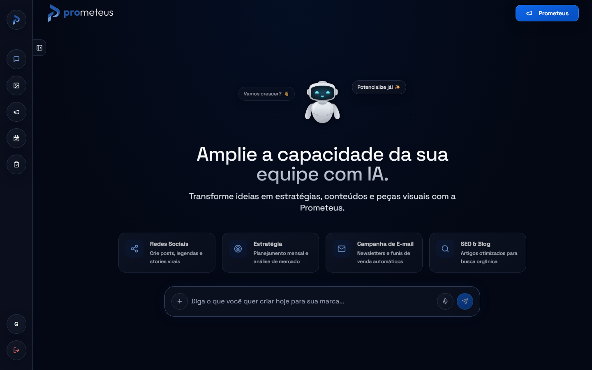
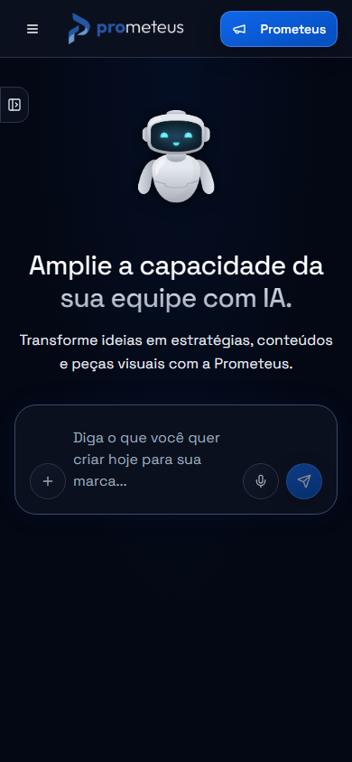
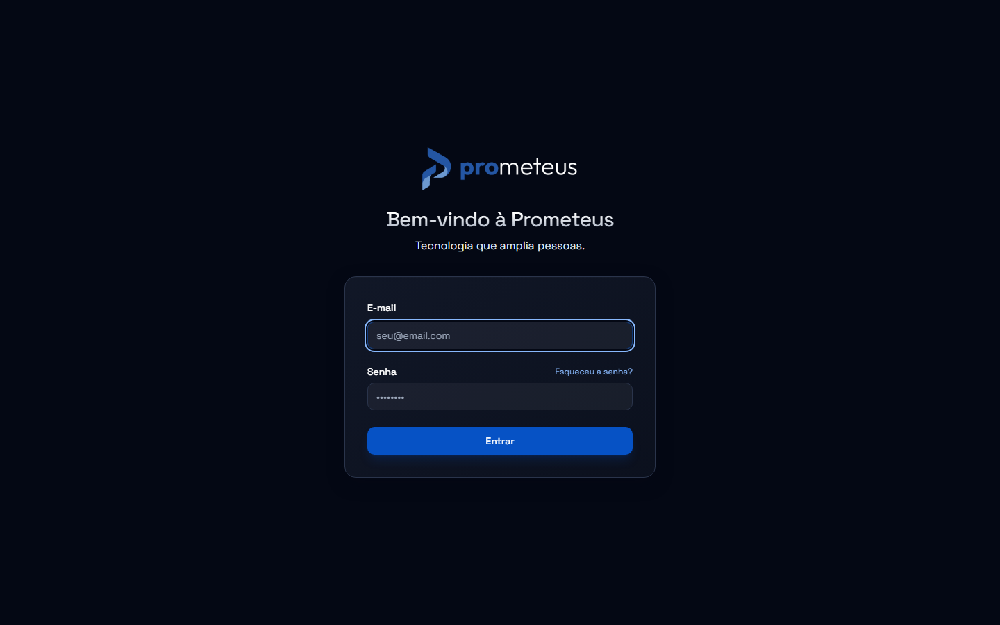
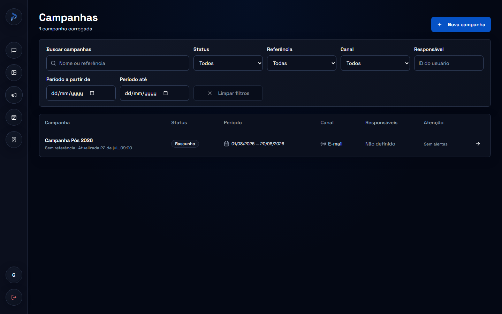

O conteúdo lidera.
Hierarquia legível, mensagens concretas e uma ação principal por região de decisão. O usuário entende onde está e o que pode fazer.
Prometeus / Manual da marca
Identidade digital · edição 2026
Versão 1.0.0 · 26/09/2026
Tecnologia que amplia pessoas
O sistema visual da Prometeus, organizado para quem cria. Da cor ao componente. Da primeira ideia à experiência final.
Cores oficiais.
Uma base reconhecível.
Tokens do produto.
Decisões documentadas.
Componentes e receitas.
Um vocabulário comum.
Direção da marca
A Prometeus usa tecnologia para ampliar a capacidade das pessoas. A identidade traduz essa ideia com profundidade, clareza e uma direção visual consistente.
Hierarquia legível, mensagens concretas e uma ação principal por região de decisão. O usuário entende onde está e o que pode fazer.
Canvas midnight, superfícies escuras e contornos sutis. O azul institucional orienta ações sem transformar tudo em destaque.
Português natural, feedback útil e o robô original na recepção. A interface explica estados sem prometer o que não aconteceu.
“Criar campanha”
“Selecione um responsável para continuar.”
“Solicitação de aprovação criada — pendente.”
“Revolucione tudo em um clique!”
“Erro desconhecido.” sem orientação
“Aprovado!” quando só foi criada a solicitação
Nome público: Prometeus. As referências visuais são o site oficial e o manual original, excluindo sua primeira página. Este kit documenta a aplicação digital aprovada pelo responsável.
Ativos originais
Use a arte fornecida. Proporções, desenho e transparência fazem parte da marca; não precisam ser reinterpretados a cada entrega.
Azul e branco sobre midnight. Login, navegação e peças institucionais escuras.
Versão original para fundos azuis. Preservar contraste e área livre.
Uso compacto. Manter a margem transparente interna do arquivo de 500 × 500 px.
Para novas peças, reservar ao menos metade da altura visível da assinatura. Regra operacional digital; a linha é apenas ilustrativa.
BrandLogo e object-contain no produto.Outfit é a fonte do desenho original da marca. A interface usa Space Grotesk. Para impressão em grande formato, obter a matriz vetorial original.
Fundamentos cromáticos
Seis cores oficiais. Tons derivados para que links, campos, estados e textos continuem legíveis sobre superfícies escuras.
Canvas e profundidade.
A base da marca.
Ação principal.
Direção e movimento.
Texto principal.
Contraste e precisão.
Superfícies de apoio.
Estrutura e seleção.
Bordas e contornos.
Equilíbrio visual.
Texto secundário.
Leitura confortável.
Primitivo → token semântico → componente. Uma ação conhece primary; não precisa repetir o hexadecimal da marca.
--prometeus-blue: 216.126 94.089% 39.804%; --primary: var(--prometeus-blue); /* No produto: */ <Button>Criar campanha</Button> /* O componente consome bg-primary + text-primary-foreground. */
| Papel | Token | Aplicação |
|---|---|---|
| Canvas | --background | Base da página |
| Superfície | --card | Painéis e cards |
| Ação | --primary | Botão principal com foreground pareado |
| Link e foco | --brand-accent / --ring | Azul claro derivado para fundo escuro |
| Texto discreto | --muted-foreground | Ajuda e metadados |
| Estados | --status-error / warning / success | Mensagens sobre superfícies escuras |
Texto branco sobre azul de ação. Links em azul claro sobre midnight. Texto de status com tom claro e rótulo descritivo.
Azul de ação como texto pequeno no fundo escuro. Texto escuro de badge fora de seu fundo claro. Estado indicado só pela cor.
Snapshot de 26/09/2026. O JSON registra referências e cores resolvidas; o CSS do aplicativo continua sendo a fonte em execução.
| Variável CSS | Valor / referência | HEX resolvido |
|---|---|---|
--prometeus-midnight | 225.000 66.667% 4.706% | #040814 |
--prometeus-blue | 216.126 94.089% 39.804% | #0652C5 |
--prometeus-white | 0.000 0.000% 100.000% | #FFFFFF |
--prometeus-navy | 222.000 36.585% 16.078% | #1A2338 |
--prometeus-slate | 220.000 28.916% 32.549% | #3B4B6B |
--prometeus-mist | 214.286 31.818% 91.373% | #E2E8F0 |
--brand-primary | var(--prometeus-blue) | #0652C5 |
--brand-secondary | 216 88% 49% | #0F67EB |
--brand-accent | 215 95% 76% | #88B8FC |
--text-primary | var(--prometeus-white) | #FFFFFF |
--text-secondary | var(--prometeus-mist) | #E2E8F0 |
--text-muted | 218 18% 67% | #9CA7BA |
--background | var(--prometeus-midnight) | #040814 |
--foreground | var(--text-primary) | #FFFFFF |
--surface | 223 45% 8% | #0B101E |
--surface-subtle | 223 39% 11% | #111727 |
--card | var(--surface) | #0B101E |
--card-foreground | var(--foreground) | #FFFFFF |
--popover | var(--surface-subtle) | #111727 |
--popover-foreground | var(--foreground) | #FFFFFF |
--glass-surface | var(--surface) | #0B101E |
--glass-border | var(--prometeus-slate) | #3B4B6B |
--primary | var(--prometeus-blue) | #0652C5 |
--primary-foreground | var(--prometeus-white) | #FFFFFF |
--secondary | var(--prometeus-navy) | #1A2338 |
--secondary-foreground | var(--prometeus-mist) | #E2E8F0 |
--muted | var(--surface-subtle) | #111727 |
--muted-foreground | var(--text-muted) | #9CA7BA |
--accent | var(--prometeus-navy) | #1A2338 |
--accent-foreground | var(--prometeus-white) | #FFFFFF |
--destructive | 0 72% 51% | #DC2828 |
--destructive-foreground | var(--prometeus-white) | #FFFFFF |
--success | 142 71% 45% | #21C45D |
--warning | 38 92% 50% | #F59F0A |
--info | var(--brand-accent) | #88B8FC |
--status-error | 0 94% 82% | #FCA6A6 |
--status-warning | 43 96% 72% | #FCD573 |
--status-success | 156 72% 67% | #6EE7B7 |
--border | 222 28% 23% | #2A344B |
--input | var(--prometeus-slate) | #3B4B6B |
--ring | var(--brand-accent) | #88B8FC |
--radius | 0.75rem | ÔÇö |
--sidebar-background | var(--surface) | #0B101E |
--sidebar-foreground | var(--prometeus-mist) | #E2E8F0 |
--sidebar-primary | var(--primary) | #0652C5 |
--sidebar-primary-foreground | var(--primary-foreground) | #FFFFFF |
--sidebar-accent | var(--accent) | #1A2338 |
--sidebar-accent-foreground | var(--accent-foreground) | #FFFFFF |
--sidebar-border | var(--border) | #2A344B |
--sidebar-ring | var(--ring) | #88B8FC |
--scrollbar-thumb | var(--prometeus-slate) | #3B4B6B |
--scrollbar-track | var(--background) | #040814 |
--scrollbar-hover | 218 24% 47% | #5B7095 |
--scrollbar-active | var(--brand-accent) | #88B8FC |
--shadow-sm | 0 2px 8px hsl(var(--background) / 0.25) | ÔÇö |
--shadow-md | 0 8px 24px hsl(var(--background) / 0.4) | ÔÇö |
--shadow-lg | 0 16px 40px hsl(var(--background) / 0.55) | ÔÇö |
--font-sans | 'Space Grotesk', system-ui, -apple-system, sans-serif | ÔÇö |
--font-mono | 'Geist Mono', ui-monospace, monospace | ÔÇö |
Tipografia do site
Space Grotesk dá forma à interface. Geist Mono organiza os detalhes técnicos. A arte original preserva Outfit na assinatura.
Tecnologia que amplia pessoas.
Regular 400 · Medium 500
Semibold 600 · Bold 700
plan_id: demo-2026
status: pending
version: 1.0.0
Código, hashes e identificadores.
Regular 400 · Medium 500
Recomendação baseada no repertório existente. Ao editar telas atuais, preserve a hierarquia do componente.
Sua próxima campanha.
Estratégia e conteúdo
Tudo pronto para começar
Organize ideias, defina prioridades e acompanhe cada etapa.
Responsável pela campanha
Atualizado há 5 minutos · exemplo de metadado
Texto de corpo sempre sólido. O degradê prata fica restrito a boas-vindas e aberturas editoriais. Campos usam 16 px no mobile. Sem conexão, o manual usa fontes de sistema como fallback.
Ritmo, forma e profundidade
Uma malha simples de espaçamento, contornos discretos e superfícies legíveis mantém a interface coesa.
Base de 4 px. Recorte recomendado da escala Tailwind.
Sm 8 · Md 10 · Lg e Xl 12 · 2xl 16.
Composer 24. Bordas geralmente de 1 px.
Midnight com iluminação azul sutil. Uma base calma para o conteúdo.
Painel escuro, borda estrutural e sombra contida. Conteúdo em primeiro plano.
Menus e diálogos opacos. Nenhum conteúdo de fundo disputa a leitura.
“Glass” é um nome histórico das classes. A linguagem aprovada é escura e substancialmente opaca. Evite vidro branco, fundos quentes e gradientes teal da identidade anterior.
Biblioteca de exemplos
Exemplos visuais baseados nos componentes atuais. As interações abaixo são locais e demonstrativas; não criam dados no produto.
Também reutilizar os wrappers de seleção, switch e tooltip: label persistente, estado exposto e acesso por teclado. Tooltip não guarda informação essencial. Fontes e requisitos dos 17 componentes estão no JSON.
components/ui/button.tsxPadrão: 40 px de altura, 14 px de fonte e 10 px de raio. No mobile deste manual, área de toque ampliada para 44 px.
No produto, compor carregamento com disabled, aria-busy e texto. O componente Button não possui uma propriedade loading.
Label + Input + Select + ButtonNome do campo sempre visível. Placeholder exemplifica, não substitui o rótulo.
40 px de altura. Texto de 16 px no mobile e 14 px a partir de md. Ajuda associada ao campo.
Texto de status legível, aria-invalid e descrição vinculada. O valor digitado é preservado.
O retorno permanece junto da tarefa e pode ser anunciado de forma acessível.
Solicitação de aprovação criada — pendente. Uma pessoa elegível precisa registrar a decisão.
Confira sua conexão e tente novamente. Seus campos preenchidos foram preservados.
Receita visual com tokens de status. Os badges de domínio existentes mantêm seus pares de cor próprios; não recolorir seus significados automaticamente.
Crie a primeira campanha para organizar objetivos e conteúdos.
Carregando campanhas…
Manter a geometria esperada e respeitar movimento reduzido.
Card + Tabs + Table12
Conteúdos planejados · dado ilustrativo
Texto, status e ação mantêm funções distintas.
As tabs funcionam com clique, setas, Home e End. O item ativo usa fundo background e texto foreground, seguindo o componente atual.
| Conteúdo | Canal | Situação |
|---|---|---|
| Tecnologia que amplia pessoas | ✓ Concluído | |
| Bastidores da campanha | ◷ Em revisão |
Dialog / Radix no produtoFundo opaco, título claro, descrição do impacto e alternativas explícitas. Escape fecha o exemplo; o foco retorna ao gatilho.
Largura máxima: 512 px
Padding: 24 px
Overlay: background / 80%
Foco contido e título acessível
Este manual usa dialog nativo para a demonstração portátil. No aplicativo, reutilizar o wrapper Radix existente.
Reutilizar os wrappers em components/ui/. Checkbox e switch precisam de label persistente e estado exposto. Select precisa de valor selecionado e navegação por teclado. Tooltip aparece por hover e foco, sem esconder informação essencial. Toast complementa um resultado persistente. A fonte e os requisitos dos 17 componentes estão no JSON.
O assistente Prometeus
O robô e os dois balões permanecem. A superfície, a tipografia e as ações seguem a linguagem Prometeus.
Arte original a 120 × 140 px. Olhos ciano mantidos. Balões visíveis a partir de 1024 px, sem interceptar cliques e sem substituir instruções.
Planos vêm do servidor. Execução exige botão explícito. Recibos terminados permanecem visíveis e não oferecem reexecução. Uma frase da IA não autoriza uma mutação.

Continuidade entre telas
Prioridade, ordem de leitura e acesso às ações precisam continuar claros quando o espaço muda.

| Faixa | Largura mínima | Direção |
|---|---|---|
| Base | 0 px | Uma coluna e ações acessíveis |
| sm | 640 px | Compor ações lado a lado quando couberem |
| md | 768 px | Rail desktop do produto |
| lg | 1024 px | Balões do mascote visíveis |
| xl / 2xl | 1280 / 1536 px | Expandir área útil sem alongar demais a leitura |
Container máximo: 1400 px. Não confundir com o breakpoint 2xl, que continua em 1536 px. Validar também 320 e 390 px, títulos longos e zoom de texto de 200%.
Empilhe ações, permita quebra de texto e use min-w-0 em flex/grid. Limite rolagem horizontal à tabela ou ao código.
Evite reduzir fontes até ficarem ilegíveis, cortar controles com overflow ou ocultar a ação principal no celular.
Qualidade de uso
Acessibilidade faz parte da composição. A meta para novas entregas é WCAG 2.2 AA; isso não representa uma certificação global do produto existente.
Mínimo para texto normal. Texto grande e elementos essenciais de interface têm critérios de 3:1, conforme o contexto.
Área acionável preferida para novos controles móveis. Os botões compactos atuais têm 36 ou 40 px; avaliar cada uso.
Faixa recomendada para feedback discreto. Respeitar movimento reduzido e evitar efeitos contínuos em áreas de leitura.
Verifique a cor composta real: transparência, gradiente e hover podem mudar o contraste. Não basta comparar os hexadecimais da paleta.
Referências: contraste de texto, contraste não textual e refluxo de conteúdo.
Identidade em contexto
A marca organiza tanto a recepção quanto o trabalho cotidiano. Novas peças podem variar a composição, mantendo o mesmo vocabulário.
Dashboard unificado · composição aprovada em 02/10/2026: Visão geral, Orgânico, Campanhas e Trabalho. Quatro indicadores, dois gráficos e até três insights com fonte, período, evidência e próximo passo na visão geral. Busca e navegação orgânica têm recortes próprios; campanha usa UTM exata; Clarity preserva a janela móvel UTC. Detalhes ficam na aba pertinente ou em diálogo. No produto, o modo padrão lê registros reais; zero medido, ausência de medição, contatos frios e cliques têm significados distintos.


Uma assinatura original, um título claro, uma imagem pertinente e uma ação principal. Fundo midnight e azul institucional. Mais respiro e escala tipográfica quando a leitura for de apresentação.
Conteúdo e tarefa primeiro. Reutilizar navegação, formulários e componentes. Não transformar tabelas e fluxos operacionais em seções de landing page.
Fotografias e imagens de IA devem reforçar tecnologia a serviço das pessoas. Não substituir as logos ou o robô por arte gerada. Usar assets autorizados e preservar espaço calmo para texto.
Codex · Claude · Antigravity · outras IAs
O kit reúne contexto, valores e exemplos. Não exige uma skill específica e não depende de um agente para ser compreendido.
AGENTS.md, design-system.md, JSON e contrato de interação. O pedido do responsável define o escopo.
Localizar o componente e os tokens existentes. A captura visual não documenta sozinha a API de um componente.
Normal, foco, hover, seleção, desabilitado, carregando, erro, vazio e sucesso conforme a tarefa.
Começar pelo mobile. Preservar hierarquia, leitura e ações nos demais tamanhos.
Testar interação, teclado, contraste, foco, texto longo e movimento reduzido.
Atualizar os documentos afetados quando surgir uma decisão durável. Relatar evidências e limites.
Use a identidade Prometeus documentada em docs/brandbook/. Leia design-system.md e design-system.json; consulte manual-da-marca.html e os assets originais. Neste repositório, obedeça ao AGENTS.md e a apps/chat-web/DESIGN.md. Reutilize tokens e componentes existentes. Mantenha logos e mascote originais. Crie ou edite [objetivo] com os estados necessários, responsividade e acessibilidade. Preserve contratos de negócio. Diferencie valores implementados de recomendações. Valide visualmente a entrega e informe o que foi verificado.
src/index.css contém os tokens em execução. tailwind.config.ts faz a adaptação. O Markdown registra intenção e regras; o JSON é um snapshot portátil. Este HTML demonstra a aparência. Contratos de negócio e autorização continuam no projeto.
Sim, como referência documentada. É um formato próprio, não um arquivo DTCG nem um tema instalado automaticamente. Adaptar os valores à stack local, mantendo os papéis e verificando o resultado. Levar também os assets e as regras do Markdown.
Depois de verificar que os existentes não atendem à necessidade. Registrar o papel, a justificativa, os estados e o comportamento responsivo. Atualizar CSS, JSON, Markdown e exemplos juntos quando houver mudança de identidade.
Renomear tenants, headers, IDs persistidos ou pastas ENS internas; mudar permissões; transformar texto do modelo em autorização; remover confirmação de ações; publicar em produção. As fronteiras do AGENTS.md continuam válidas.
Critério de qualidade
Use esta revisão antes de entregar uma nova tela ou peça. As marcações abaixo são locais e não persistem ao recarregar.
README.md — ponto de entrada
manual-da-marca.pdf — edição para compartilhar
design-system.md — contrato completo
design-system.json — valores e receitas
Logo principal · Logo branca
Símbolo · Mascote
Baseado no site Prometeus, no manual original (páginas 2 em diante) e no sistema aprovado em 26/09/2026. Documentos e assets reunidos em docs/brandbook/.
Para compartilhar este manual, levar o HTML e a pasta assets juntos. Fontes online têm fallback. Nenhum exemplo usa uma API de produção.